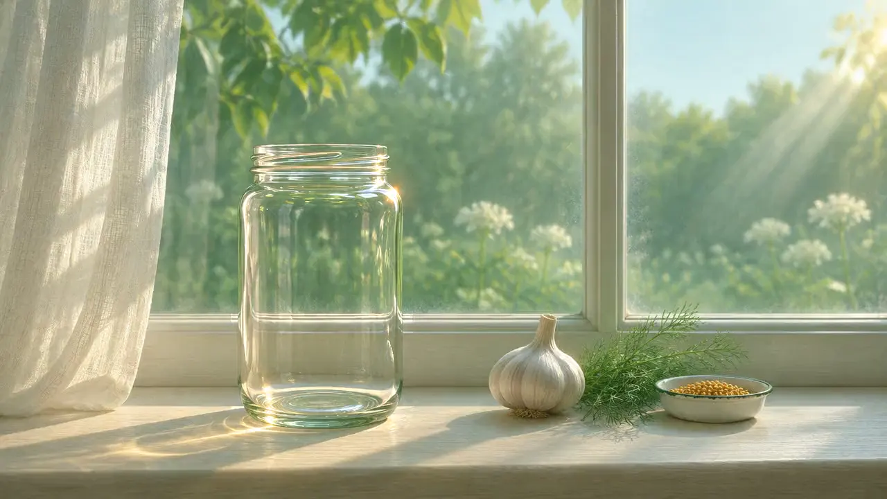
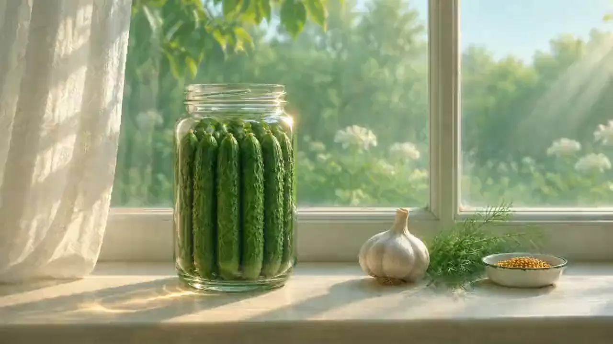
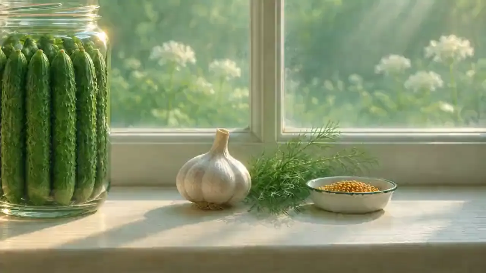
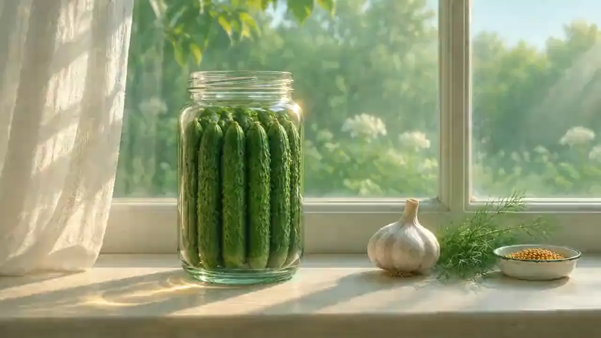
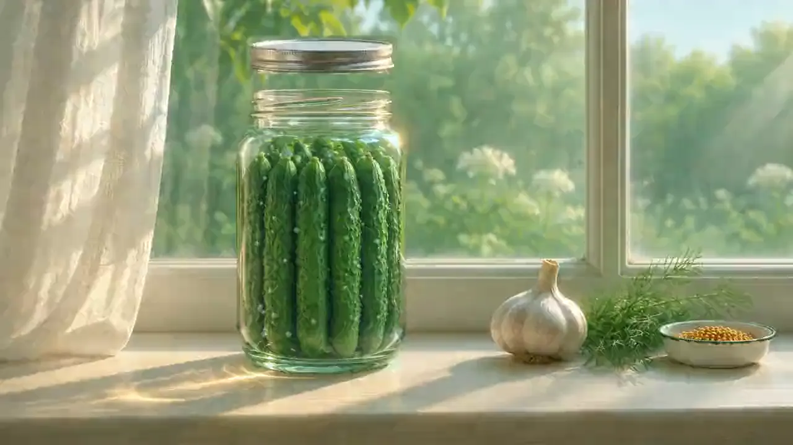
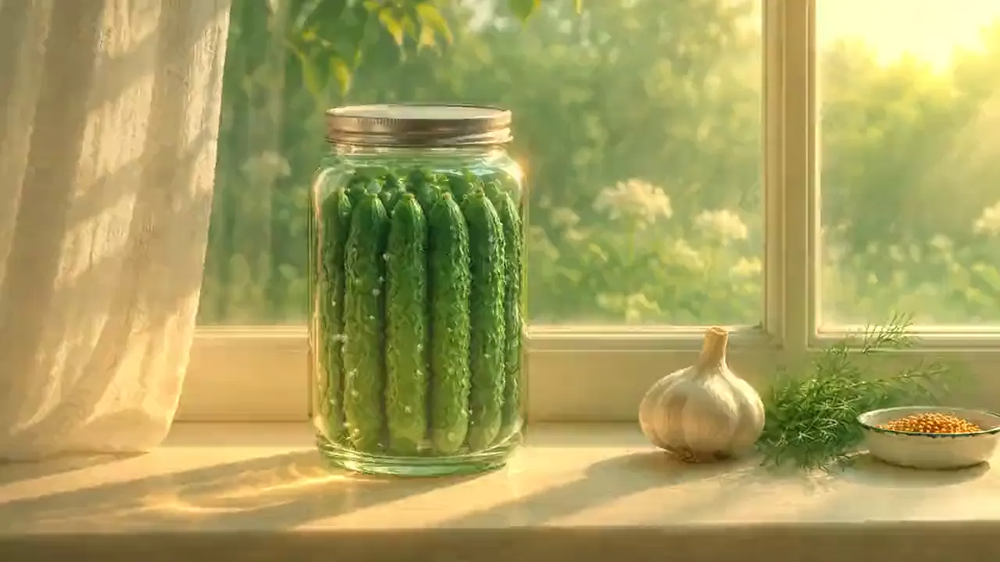
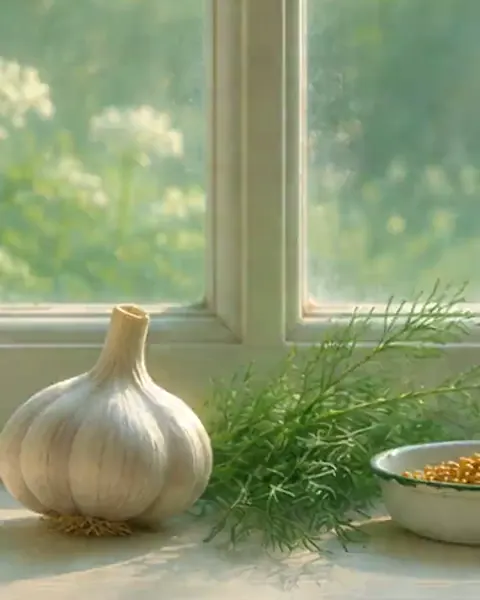
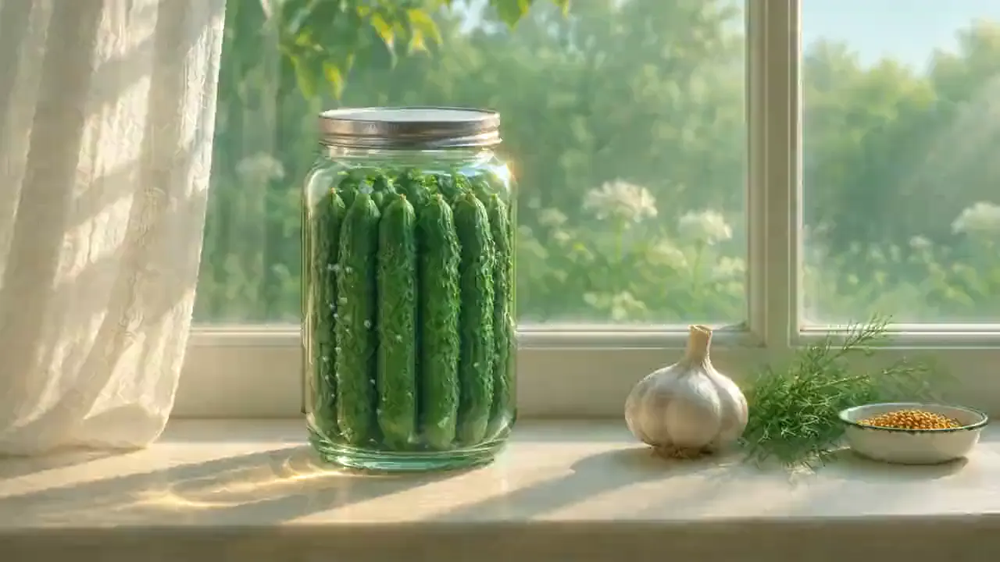
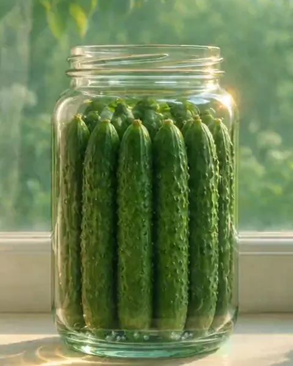
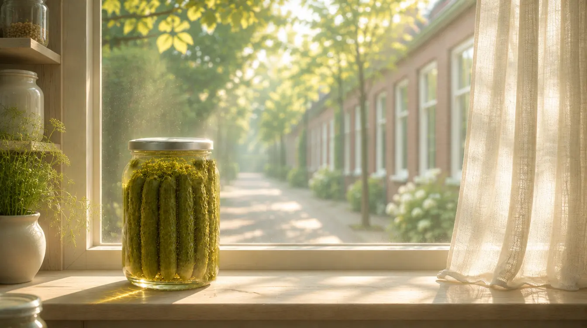

Poolse winkel · Waalwijk
De Poolse Winkel Igor
Een stukje Poolse keuken in Waalwijk. Aan de Mendelssohnstraat 96 — gewoon om de hoek.
Dzień dobry!Mendelssohnstraat 96 · Openingstijden volgen
Sfeerbeeld
scroll — zo ontstaat een pot ogórki

Eerst een lege pot.
Zo begint elke Poolse voorraadkast.
Een pot bij het raam
In bijna elke Poolse keuken staat er wel een: een glazen pot op de vensterbank of onder in de kast. Leeg is hij een belofte. Over een paar dagen staat er iets in dat je nergens anders zo proeft.

Dan de komkommers.
Klein, stevig en rechtop tegen elkaar.
Klein en stevig
Voor ogórki kiszone kies je kleine, stevige komkommers met een dun velletje. Ze gaan rechtop de pot in, dicht tegen elkaar, zodat ze straks niet gaan drijven en overal even goed in de pekel staan.

Dille, knoflook, mosterdzaad.
Wat erbij hoort, ligt al klaar.
Wat erbij hoort
Schermen dille met zaad, een paar tenen knoflook, een blad mierikswortel voor de knapperigheid en een handje mosterdzaad. Elke keuken heeft zijn eigen mengsel; het idee blijft hetzelfde: eenvoudig, en vol smaak.

Zout water. Verder niets.
Geen azijn: de pekel doet het werk.
Alleen zout en water
Dit is geen augurk uit het zuur. Er komt geen azijn bij te pas. Het zoute water en de tijd doen samen het werk: de komkommers worden vanzelf zuur, fris en een beetje bruisend.

Deksel erop.
Nu is het aan de tijd.
Dicht en wachten
Deksel erop en laten staan. In de pot gebeurt het rustig: kleine belletjes stijgen op, de pekel wordt troebel, de groene kleur verandert langzaam. Haasten heeft geen zin.

Zo smaakt geduld.
Ogórki kiszone — vraag in de winkel wat er staat.
Zuur, fris, knapperig
Na een paar dagen zijn ze olijfgroen en heerlijk zuur. Bij een boterham, bij aardappels, bij soep — of zomaar uit de pot. Welke potten er bij Igor op de plank staan, hoor je in de winkel.

Sfeerbeeld
Op de plank, om de hoek.
Je hoeft niet zelf te wachten tot een pot klaar is. In een Poolse winkel staan de potten en blikken in rijen naast elkaar, met daaronder het brood en verderop wat je voor het avondeten nodig hebt. Voor wie uit Polen komt is het een stukje thuis. Voor de buren uit Waalwijk is het een plek om iets nieuws te proeven.
De Poolse Winkel Igor vind je aan de Mendelssohnstraat 96 in Waalwijk. Een winkel om de hoek: je loopt binnen, kijkt rond en vraagt wat er is.
kiszenie
Zuur zonder azijn.
Kiszenie is de Poolse manier om groente te bewaren: in zout water, met kruiden, en dan vooral wachten. Melkzuurbacteriën die van nature op de groente zitten, zetten de suikers om in zuur. Zo worden komkommers, kool of bieten frisser, zuurder en langer houdbaar, zonder dat er azijn aan te pas komt.
Daarom smaakt een echte ogórek kiszony anders dan een augurk uit een Nederlandse pot. Minder scherp, ronder, met een licht bruisend randje. De pekel zelf wordt ook gedronken: veel Polen zweren erbij, koud uit de koelkast.
Het bekendste voorbeeld is zuurkool — kapusta kiszona — de basis van bigos. Maar ook in soep proef je het: żurek en ogórkowa danken hun frisse smaak aan hetzelfde idee. Eenvoudig, oud, en nog altijd in bijna elke Poolse keuken te vinden.

Pekelklok

SfeerbeeldTer illustratie. Hoe lang iets staat, verschilt per pot en per keuken.

Een winkel om de hoek.
Een Poolse winkel is meer dan een schap met andere etiketten. Het is de plek waar je het brood vindt dat je van thuis kent, waar je een praatje maakt bij de kassa en waar je de ingrediënten haalt voor het gerecht van je oma.
Voor wie hier woont en werkt en Polen mist, is zo'n winkel in de buurt goud waard. En voor iedereen die nieuwsgierig is: loop gerust binnen. Vraag wat iets is, hoe je het eet, wat je erbij neemt. Proeven is de snelste manier om een keuken te leren kennen.
Zo'n winkel heeft meestal brood en gebak, vleeswaren en worst, zuivel zoals twaróg, potten en blikken voor de voorraadkast, snoep en koek, en iets te drinken. Wat De Poolse Winkel Igor precies verkoopt, vult de eigenaar hier zelf aan.
Smaakkompas
Waar heb je zin in?
Kies een smaak en kijk wat er in een Poolse keuken bij past. Alles hieronder is een voorbeeld; wat er echt op de plank staat, zie je in de winkel.
Tik op een deksel om een smaak te kiezen.
Kijk in de winkel
Sfeerbeeld
Zapraszamy!
Tot zo, om de hoek.
Mendelssohnstraat 96 in Waalwijk. Loop binnen, kijk rustig rond en vraag gerust wat er vandaag op de plank staat. Liever eerst even bellen? Ook goed.